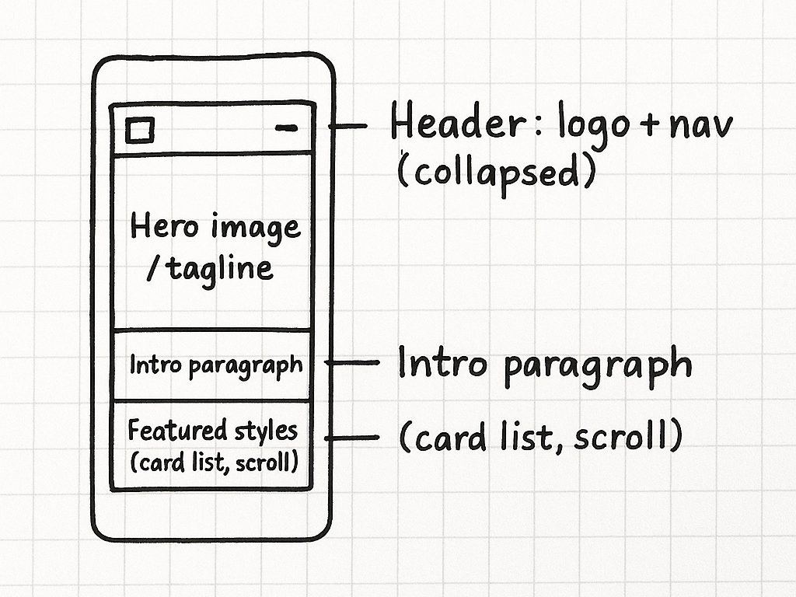
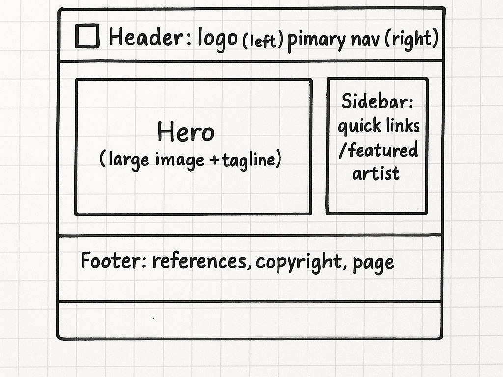

Site Name
Odafe Erikevwie African Art & Culture Explorer Page
Why this name: The name clearly indicates the subject (African art and culture), supports search visibility, and is memorable for visitors interested in regional art traditions and artists.
Optional domain availability (example): africanartsexplorer.org (check domain registrars before purchase — domain is optional for this class).
Site Purpose
This website provides an accessible, visually focused resource about African art traditions and contemporary artists. It will include:
- Introductory material (Home) explaining the purpose and scope
- Art Styles page describing regional art forms (images and cultural context)
- Artists page with short profiles and a dynamic, filterable gallery
- Contact page with a standards-based HTML form
- References page listing image and text sources
Target audience: Students, hobbyists, museum visitors, and anyone curious about African visual culture.
User Scenarios
Define typical questions visitors will ask — the site content should answer these clearly.
- Scenario 1: “I’m studying for a class — where can I find a concise overview of West African metalwork and images I can cite?”
How site answers: Art Styles page with Benin Bronze entry, images, short bibliography link to References page. - Scenario 2: “I want to see contemporary African artists working with found materials — who are notable artists and what are examples of their work?”
How site answers: Artists page with profiles (e.g., El Anatsui, Romuald Hazoumè) and a gallery that filters by medium and region. - Scenario 3 (bonus): “Can I save a list of artists I like while browsing?”
How site answers: Use localStorage to save visitor selections (e.g., saved favorites) and show a small “Saved favorites” state on the Artists page.
Color Scheme
The plan uses a limited, high-contrast palette for readability and cultural warmth.
#0C3B2E
Deep Green — used for headings, nav links, and primary accents.
#F4E9DC
Warm Sand — background for cards and large areas.
#C85A3B
Terracotta (accent) — buttons, call-to-action, card highlights.
Where used:
- Headings & navigation:
#0C3B2E - Background (page / card areas):
#F4E9DC - Buttons / CTAs / hover states:
#C85A3B - Body text: dark gray/near-black for readability (not the deep green)
Typography
Chosen fonts (Google Fonts):
- Merriweather — used for headings (H1, H2). A serif with warmth and good display presence.
- Inter — used for body text and UI (nav, buttons). A legible, modern sans-serif for small sizes.
Font usage:
- Headings (H1, H2, H3):
Merriweather, 700 weight. - Body, captions, UI:
Inter, 300–400–600 weights.
Limit fonts to these two to keep load times low and maintain visual consistency. Use font-display: swap (handled by Google Fonts link).
Wireframes
Simple wireframe sketches for the Home page. The wireframes show the relative layout and content blocks.
Mobile (portrait)
Desktop / Wide
Content Outline (Pages & Key Elements)
- index.html — Hero, intro, featured styles, highlights, link to artists.
- art-styles.html — Filter buttons (by region), grid of cards with images + short descriptions, resources links.
- artists.html — Filterable list/gallery, profile modals or inline details, "save to favorites" using localStorage.
- contact.html — Accessible HTML form (name, email, message), client-side validation.
- references.html — Unstyled references listing image sources and text sources (to satisfy assignment).
Assets: images placed in /project/images/ and optimized for web (jpeg/webp, appropriate sizes). Filenames will match the art style or artist slug (e.g., benin-bronze.jpg).
CSS / Technical Notes
Files & structure (minimum):
project/
├─ index.html
├─ art-styles.html
├─ artists.html
├─ contact.html
├─ references.html
├─ siteplan.html
├─ css/
| └─ styles.css <-- main site styles (shared)
| └─ siteplan.css <-- styles for this document (optional)
└─ js/
└─ main.js <-- dynamic behavior, arrays & objects, localStorage
└─ contact.js <-- optional: small module for form handling
Key CSS decisions:
- Mobile-first approach. Use media queries for larger breakpoints.
- Use CSS Grid for gallery and card layouts; Flexbox for nav and header layout.
- Lazy loading:
loading="lazy"on images + progressive image sizes and optimized formats. - Accessibility: focus outlines, sufficient color contrast, semantic HTML elements (nav, main, header, footer).
Testing & Validation Checklist
Self-check steps and tools to use before final submission:
- HTML validation: Use W3C Markup Validation to check for syntax errors.
- CSS validation: Use W3C CSS Validator or DevTools to confirm no unused/duplicate rules.
- JavaScript console: Open DevTools Console (Chrome/Firefox) to ensure no runtime errors.
- Accessibility: Use Lighthouse Accessibility audit and run manual keyboard navigation checks (tab order, ARIA where needed).
- Color contrast: Use DevTools CSS Overview or a contrast checker to ensure text meets WCAG AA (4.5:1 for normal text).
- Performance: Lighthouse Performance audit; optimize images, minimize render-blocking resources.
- Best practices & SEO: Lighthouse Best Practices and SEO audits; include descriptive meta tags and alt text for images.
- Responsiveness: Test in mobile, tablet, and desktop viewports; verify breakpoints and layout changes.
- Functional tests: filter buttons, localStorage save/restore, contact form validation and success state.
Document any issues and fixes in a short project-notes.md file prior to submission.
Accessibility & Privacy Considerations
- Provide
alttext for every image — short descriptive text and credit in References page. - Use semantic HTML elements and ARIA only when necessary (avoid misuse).
- Make form privacy clear: the contact form will not store personal data beyond localStorage for "visitorName" (used only to personalize messages). No backend storage is required for this class.